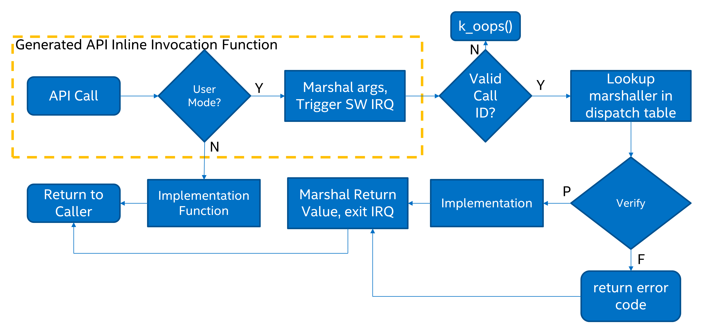

系统调用
用户线程运行时的特权比管理态线程少：某些 CPU 指令不能使用，并且只能访问内存映射中有限的一部分。系统调用（可以）让用户线程执行它们无法直接执行的操作。
定义系统调用时，务必确保对 API 私有数据的访问只能通过系统调用接口进行。内核私有数据绝不能直接提供给用户模式线程。例如，k_queue API 有意没有开放给用户模式，因为它们把队列的簿记信息直接存放在用户模式可见的队列缓冲区中。
允许用户注册在管理态模式下运行的回调函数的 API，绝不能作为系统调用开放。这类 API 应仅保留给管理态模式访问。
本节介绍如何声明新的系统调用，并讨论与之相关的一些实现细节。
组成部分
所有系统调用都包含以下组成部分：
API 的 C 原型，以
__syscall为前缀。它声明在include/下或其他SYSCALL_INCLUDE_DIRS目录下的某个头文件中。该原型从不手工实现，而是由 scripts/build/gen_syscalls.py 脚本生成。生成的是一个内联函数，它要么直接调用实现函数（从管理态模式调用时），要么经过特权提升和校验步骤（从用户模式调用时）。实现函数，即系统调用的真正实现。如果从用户模式调用，实现函数可以假定所有传入的参数都已经过校验。
校验函数，它包装实现函数，并对所有传入的参数进行校验。
解组（unmarshalling）函数，这是自动生成的处理函数，必须被用户源代码包含。
C 原型
C 原型表示从用户模式或管理态模式调用该 API 的方式。例如，初始化一个信号量：
__syscall void k_sem_init(struct k_sem *sem, unsigned int initial_count,
unsigned int limit);
__syscall 属性非常特殊。对 C 编译器而言，它只是展开为“static inline”。但对构建后脚本 scripts/build/parse_syscalls.py 而言，它表示该 API 是一个系统调用。scripts/build/parse_syscalls.py 脚本会对函数原型做一些解析，以确定其返回值和参数的数据类型，因此存在一些限制：
数组参数必须以指针而不是数组的形式传入。例如，不允许写成
int foo[]或int foo[12]，而应写成int *foo。函数指针会让这个简单的解析器彻底混乱。变通方法是先用 typedef 定义它们，然后在参数列表中使用该 typedef。
__syscall必须位于原型的最前面。
在确定要生成的系统调用集合时，有意不使用预处理器。但是，任何实际上没有定义校验函数的已生成系统调用（因为内核配置中未启用相关特性），都会改为指向一个专门用于未实现系统调用的校验函数。API 的数据类型定义不应对编译器有条件地可见。
任何声明了系统调用的头文件，都必须在文件的最末尾包含一个特殊的生成头文件。该头文件遵循 syscalls/<name of header file> 的命名约定。例如，在 include/zephyr/drivers/sensor.h 的末尾：
#include <zephyr/syscalls/sensor.h>
C 原型函数必须声明在 CMake 变量 SYSCALL_INCLUDE_DIRS 所列出的某个目录中。设置了 CONFIG_APPLICATION_DEFINED_SYSCALL 时，该列表总是包含 APPLICATION_SOURCE_DIR；设置了 CONFIG_ZTEST 时，总是包含 ${ZEPHYR_BASE}/subsys/testsuite/ztest/include。可以通过 CMake 命令行，或在运行 find_package(Zephyr ...) 之前执行的 CMake 代码中向该列表添加其他路径。${ZEPHYR_BASE}/include 总是会被扫描，以查找可能的系统调用原型。
注意，并非所有系统调用都会被包含在最终的二进制文件中。CMake 函数 zephyr_syscall_header 和 zephyr_syscall_header_ifdef 用于指定哪些头文件包含必须出现在最终二进制文件中的系统调用原型。注意，CMake 变量 SYSCALL_INCLUDE_DIRS 所列目录中的头文件，其系统调用总是会出现在最终二进制文件中。要强制将所有系统调用包含在最终二进制文件中，请开启 CONFIG_EMIT_ALL_SYSCALLS。
调用上下文
如果已知某个 C 文件中的所有代码只在用户模式下运行，或只在管理态模式下运行，就可以让使用系统调用 API 的源代码更高效。系统会查找宏 __ZEPHYR_SUPERVISOR__ 或 __ZEPHYR_USER__ 的定义，这些宏通常由构建系统添加到相关文件的编译器标志中。
如果未启用
CONFIG_USERSPACE，所有 API 都直接调用实现函数。否则，默认做法是在运行时检查处理器当前是否运行在用户模式下，然后相应地发起系统调用或直接调用实现函数。
如果定义了
__ZEPHYR_SUPERVISOR__，则假定所有代码都运行在管理态模式下，所有 API 都直接调用实现函数。如果代码实际上运行在用户模式下，那么一旦它试图执行不被允许的操作，就会产生 CPU 异常。如果定义了
__ZEPHYR_USER__，则假定所有代码都运行在用户模式下，并无条件地发起系统调用。
实现细节
用 __syscall 声明 API 后，scripts/build/gen_syscalls.py 脚本会在 C 文件和头文件中生成一些代码，这些代码都位于项目输出目录的 include/generated/ 下：
该系统调用会被加入系统调用 ID 的枚举类型中，该枚举定义在
include/generated/zephyr/syscall_list.h中。其名称是 API 名称的大写形式，并加上K_SYSCALL_前缀。在分派表
_k_syscall_table中为该系统调用创建一个条目，该表定义在include/generated/zephyr/syscall_dispatch.c中启用
CONFIG_EMIT_ALL_SYSCALLS时，该表只包含其对应原型声明在以下头文件中的系统调用：由 CMake 函数
zephyr_syscall_header和zephyr_syscall_header_ifdef指定的头文件，或位于 CMake 变量
SYSCALL_INCLUDE_DIRS所指定目录下的头文件。
声明一个弱校验函数，它只是“未实现系统调用”校验函数的别名。之所以需要它，是因为真正的校验函数可能会也可能不会被构建，取决于内核配置。例如，如果用户线程调用了传感器子系统的 API，但未启用传感器子系统，则会改为调用该弱校验函数。
在
include/generated/zephyr/syscalls/<name>_mrsh.c中定义一个解组函数
API 的函数体在生成的系统头文件中创建。以 k_sem_init() 为例，该 API 声明在 include/zephyr/kernel.h 中。在 include/zephyr/kernel.h 的末尾有:
#include <zephyr/syscalls/kernel.h>
该头文件中包含 k_sem_init() 的函数体:
static inline void k_sem_init(struct k_sem * sem, unsigned int initial_count, unsigned int limit)
{
#ifdef CONFIG_USERSPACE
if (z_syscall_trap()) {
arch_syscall_invoke3(*(uintptr_t *)&sem, *(uintptr_t *)&initial_count, *(uintptr_t *)&limit, K_SYSCALL_K_SEM_INIT);
return;
}
compiler_barrier();
#endif
z_impl_k_sem_init(sem, initial_count, limit);
}
这会生成一个接受三个参数、返回值为 void 的内联函数。根据上下文，它要么直接调用实现函数，要么经过系统调用的特权提升。实现函数的原型也会自动生成。
最后一层是系统调用本身的调用。所有实现了系统调用的架构都必须实现从 _arch_syscall_invoke0() 到 _arch_syscall_invoke6() 这七个内联函数。这些函数把参数编组到指定的 CPU 寄存器中，并执行必要的特权提升。API 内联函数的参数在作为参数传给系统调用之前，会被 C 强制转换为与寄存器大小相同的 uintptr_t。例外情况是在 32 位系统上传递 64 位参数，此时 64 位参数会被拆分为低位和高位两部分，作为两个连续的参数传递。返回值总是 uintptr_t 类型，不需要时可以忽略。


有些系统调用可能有超过六个参数，但在所有架构上，通过寄存器传递的参数数量都限制为六个。额外的参数需要放在源内存空间中的一个数组里传递，校验函数需要把这块内存视为不可信内存。这些代码（打包、解包和校验）会根据需要自动生成在上述桩函数和解组函数中。
系统调用返回 uintptr_t 类型的值，由包装函数通过 C 强制转换为 API 原型声明中的返回类型。这意味着在 32 位系统上，64 位值可能无法直接从系统调用返回给其包装函数。为了解决这个问题，自动生成的包装函数会在其栈上定义一个 64 位中间变量（被视为 不可信 缓冲区），并把指向该变量的指针作为最后一个参数传给系统调用。从系统调用返回后，包装函数会返回写入该缓冲区的值。能够直接返回 64 位值的 64 位系统不存在这个问题。
实现函数
实现函数是真正完成 API 工作的部分。Zephyr 通常很少甚至不对参数做错误检查，或者用断言来做这类检查。编写实现函数时，参数校验是可选的，并且应使用断言完成。
所有实现函数都必须遵循命名约定，即在 API 名称前加上 z_impl_ 前缀。实现函数可以作为 static inline 函数声明在与 API 相同的头文件中，也可以声明在某个 C 文件中。实现函数不需要原型，原型会自动生成。
校验函数
当用户线程发起系统调用时，校验函数在内核侧运行。当用户线程触发软件中断以提升到管理态模式时，公共系统调用入口点会根据用户提供的系统调用 ID 查找该系统调用对应的解组函数并跳转执行，解组函数再调用校验函数。
校验函数和解组函数仅在从用户模式调用系统调用 API 时运行。如果从管理态模式调用 API，则直接调用实现函数，不会产生软件陷阱。
校验函数的作用是校验所有传入的参数，包括：
所提供的任何内核对象指针。例如，信号量 API 必须确保传入的信号量对象是有效的信号量，并且调用线程对其拥有权限。
从用户模式传入的任何内存缓冲区。必须检查调用线程对所提供的缓冲区具有读或写权限。
其他任何有效值范围受限的参数。
校验函数涉及大量样板代码，include/zephyr/internal/syscall_handler.h 中的一些宏简化了这些代码。校验函数应使用这些宏来声明。
参数校验
有几个用于校验参数的宏：
K_SYSCALL_OBJ()检查一个内存地址，断言它是预期类型的有效内核对象、调用线程对其拥有权限，并且该对象已初始化。K_SYSCALL_OBJ_INIT()与K_SYSCALL_OBJ()相同，只是所提供的对象可以未初始化。这对对象初始化函数的校验函数很有用。K_SYSCALL_OBJ_NEVER_INIT()与K_SYSCALL_OBJ()相同，只是所提供的对象必须未初始化。它用得不多，目前只用于k_thread_create()。K_SYSCALL_MEMORY_READ()校验一个特定大小的内存缓冲区。调用线程必须对整个缓冲区拥有读权限。K_SYSCALL_MEMORY_WRITE()与K_SYSCALL_MEMORY_READ()相同，但调用线程还必须拥有写权限。K_SYSCALL_MEMORY_ARRAY_READ()校验一个数组，其总大小由元素个数和元素大小两个独立参数表示。该宏在计算总大小时会正确处理乘法溢出。调用线程必须对整个大小范围拥有读权限。K_SYSCALL_MEMORY_ARRAY_WRITE()与K_SYSCALL_MEMORY_ARRAY_READ()相同，但调用线程还必须拥有写权限。K_SYSCALL_VERIFY_MSG()在运行时检查某个布尔表达式，该表达式必须求值为真，否则检查失败。它有一个变体K_SYSCALL_VERIFY，不接受消息参数，而是在失败时打印所检查的表达式。后者只应用于最显而易见的检查。K_SYSCALL_DRIVER_OP()在运行时检查某个驱动实例是否能执行特定操作。虽然该宏可以单独使用，但它主要是为每个驱动子系统自动生成的宏的构建基础。例如，要校验 GPIO 驱动，可以使用K_SYSCALL_DRIVER_GPIO()宏。K_SYSCALL_SPECIFIC_DRIVER()是一项运行时检查，用于验证所提供的指针是某个特定设备驱动的有效实例、调用线程对其拥有权限，并且该驱动已初始化。其做法是检查驱动实例中存储的 API 结构体指针，确保它与所提供的值相符，而该值应为该特定驱动的 API 结构体的地址。
如果任何检查失败，这些宏会返回非零值。可以使用 K_OOPS() 宏触发内核 oops，从而终止调用线程。之所以这样做而不是返回某种错误状态，是为了让从管理态模式调用时 API 保持一致。
校验函数的定义
所有系统调用都会被分派到一个校验函数，其名称是在系统调用名称前加上 z_vrfy_ 前缀。它们的返回类型和参数类型与所包装的系统调用完全相同。它们的任务是在校验所有参数之后执行系统调用（通常是调用实现函数）。
校验函数本身由一个自动生成的解组函数调用，解组函数负责从架构层解包寄存器参数，并将其转换为正确的类型。解组函数定义在一个必须由用户代码包含的头文件中，通常在翻译单元中校验函数的定义之后的某处包含（以便能够内联）。
例如：
static int z_vrfy_k_sem_take(struct k_sem *sem, int32_t timeout)
{
K_OOPS(K_SYSCALL_OBJ(sem, K_OBJ_SEM));
return z_impl_k_sem_take(sem, timeout);
}
#include <zephyr/syscalls/k_sem_take_mrsh.c>
校验时的内存访问策略
通过引用传给系统调用的参数需要特殊处理，因为任何能访问该参数所指向内存的用户线程，都可以随时修改这些参数的值。如果内核根据这块内存的内容做出任何逻辑判断，即使做了检查，内核也可能受到攻击。这类漏洞利用称为 TOCTOU（检查时间到使用时间，Time Of Check to Time Of Use）。
缓解这类攻击的正确做法是在校验函数中制作副本，并只对副本进行参数检查，用户线程永远无法访问这些副本。传给实现函数的是副本，而不是用户发送的原始数据。k_usermode_to_copy() 和 k_usermode_from_copy() API 就是为此而提供的。
从用户模式传入的 C 字符串也需要类似的处理，因为其长度事先未知，而且必须在不越过调用者可访问内存的前提下找到结尾的 NUL。k_usermode_string_copy() 和 k_usermode_string_alloc_copy() 辅助函数可以在实现函数使用用户提供的字符串之前，安全地校验该字符串并将其复制到由内核控制的内存中。
有一个例外，涉及大型数据缓冲区：这些缓冲区仅用于提供一块内存区域，要么只被写入，要么其内容从不用于任何校验或控制流。本节稍后会进一步讨论。
第一个例子是一个用作某个整数值输出参数的参数：
int z_vrfy_some_syscall(int *out_param)
{
int local_out_param;
int ret;
ret = z_impl_some_syscall(&local_out_param);
K_OOPS(k_usermode_to_copy(out_param, &local_out_param, sizeof(*out_param)));
return ret;
}
这里我们在栈上分配了 local_out_param，把它的地址传给实现函数，然后使用 k_usermode_to_copy() 填写调用者传入的内存。
人们可能想写得更简洁一些：
int z_vrfy_some_syscall(int *out_param)
{
K_OOPS(K_SYSCALL_MEMORY_WRITE(out_param, sizeof(*out_param)));
return z_impl_some_syscall(out_param);
}
但是，如果实现函数在其逻辑中读取过这块内存，这种写法就不安全。例如，它可能被用来存储某个计数值，而能访问这块内存的用户线程可以篡改它。对于小的整数值，像第一个例子那样进行复制是迄今为止最安全的做法。
有些参数可能既是输入又是输出。例如，常见的 API 会传入一个指向某个 size_t 的指针，表示允许的最大大小，然后由实现函数更新该值，以反映实际处理的字节数。这种情况同样应使用栈上的副本：
int z_vrfy_in_out_syscall(size_t *size_ptr)
{
size_t size;
int ret;
K_OOPS(k_usermode_from_copy(&size, size_ptr, sizeof(size));
ret = z_impl_in_out_syscall(&size);
K_OOPS(k_usermode_to_copy(size_ptr, &size, sizeof(size)));
return ret;
}
许多系统调用会传入结构体，甚至是链式数据结构。所有这些都应被复制。通常的做法是在栈上分配副本：
struct bar {
...
};
struct foo {
...
struct bar *bar_left;
struct bar *bar_right;
};
int z_vrfy_must_alloc(struct foo *foo)
{
int ret;
struct foo foo_copy;
struct bar bar_right_copy;
struct bar bar_left_copy;
K_OOPS(k_usermode_from_copy(&foo_copy, foo, sizeof(*foo)));
K_OOPS(k_usermode_from_copy(&bar_right_copy, foo_copy.bar_right,
sizeof(struct bar)));
foo_copy.bar_right = &bar_right_copy;
K_OOPS(k_usermode_from_copy(&bar_left_copy, foo_copy.bar_left,
sizeof(struct bar)));
foo_copy.bar_left = &bar_left_copy;
return z_impl_must_alloc(&foo_copy);
}
在某些情况下，数据量在编译时未知，或者可能太大而无法在栈上分配。此时可能需要通过 z_thread_malloc() 从调用者的资源池中获取内存。这应始终被视为最后的手段。功能安全编程指南强烈不建议使用堆，并且必须在文档中明确说明使用了资源池。任何分配问题都必须通过返回 -ENOMEM 报告给调用者。绝不能使用 K_OOPS() 来检查资源分配是否成功。
struct bar {
...
};
struct foo {
size_t count;
struct bar *bar_list; /* array of struct bar of size count */
};
int z_vrfy_must_alloc(struct foo *foo)
{
int ret;
struct foo foo_copy;
struct bar *bar_list_copy;
size_t bar_list_bytes;
/* Safely copy foo into foo_copy */
K_OOPS(k_usermode_from_copy(&foo_copy, foo, sizeof(*foo)));
/* Bounds check the count member, in the copy we made */
if (foo_copy.count > 32) {
return -EINVAL;
}
/* Allocate RAM for the bar_list, replace the pointer in
* foo_copy */
bar_list_bytes = foo_copy.count * sizeof(struct_bar);
bar_list_copy = z_thread_malloc(bar_list_bytes);
if (bar_list_copy == NULL) {
return -ENOMEM;
}
K_OOPS(k_usermode_from_copy(bar_list_copy, foo_copy.bar_list,
bar_list_bytes));
foo_copy.bar_list = bar_list_copy;
ret = z_impl_must_alloc(&foo_copy);
/* All done with the memory, free it and return */
k_free(foo_copy.bar_list_copy);
return ret;
}
最后，我们必须考虑大型数据缓冲区。它们代表用户内存中的某些区域，数据要么从中复制出来，要么复制进去。允许把这些指针直接传给实现函数。但仍必须用 K_SYSCALL_MEMORY API 校验调用者对缓冲区的访问权限。需要满足以下约束：
如果实现函数用该缓冲区写入数据（例如从某个 MMIO 区域采集的数据），则实现函数只能写入这些数据，绝不能读取。
如果实现函数用该缓冲区读取数据（例如要写入某个硬件目标的一块内存），则这些数据必须不经任何处理地读取。不能根据数据缓冲区的内容实现任何条件逻辑。如果需要这类逻辑，必须制作副本。
该缓冲区只能在调用期间同步使用。实现函数绝不能保存缓冲区地址并在之后异步使用，例如在中断触发时使用。
int z_vrfy_get_data_from_kernel(void *buf, size_t size)
{
K_OOPS(K_SYSCALL_MEMORY_WRITE(buf, size));
return z_impl_get_data_from_kernel(buf, size);
}
校验时的返回值策略
在校验系统调用时，需要注意哪些类型的校验失败应把返回值传回给调用者，哪些则应直接调用 K_OOPS() 终止调用线程。当前的约定如下：
对于已定义但未编译的系统调用，对这些缺失系统调用的调用会被路由到
handler_no_syscall()，该函数会调用K_OOPS()。由
K_SYSCALL_MEMORY系列 API、k_usermode_from_copy()、k_usermode_to_copy()发现的任何非法内存访问，都应触发K_OOPS。当调用者对内存缓冲区没有相应权限，或者某个大小计算发生溢出时，就会出现这种情况。大多数系统调用都接受内核对象指针作为参数，并使用某个
K_SYSCALL_OBJ函数、K_SYSCALL_DRIVER_nnnnn或手动调用k_object_validate()进行检查。这些检查可能因多种原因失败：缺少驱动 API、内核对象指针无效、内核对象类型错误或初始化状态不正确。这些问题都应调用K_OOPS()。内存堆分配失败（通常是调用
z_thread_malloc()时）导致的任何错误，都应把-ENOMEM传回给调用者。一般性的参数检查应在实现函数中完成，大多数情况下使用
CHECKIF()。CHECKIF()的行为取决于内核配置，但如果启用了用户模式，就会强制启用CONFIG_RUNTIME_ERROR_CHECKS，从而保证会执行这些检查并传回返回值。
完全禁止从用户模式注册任何类型的内核模式回调函数。仅用于安装回调的 API 不得作为系统调用开放。有些驱动子系统 API 可能接受可选的回调函数指针。这些 API 的用户模式校验函数必须强制要求这些指针为 NULL，如果不是则应调用
K_OOPS()。有些参数检查只在用户模式下强制执行。这些检查应在校验函数中进行，并尽可能把返回值传回给调用者。
目前 Zephyr 中有一些已知的、不符合上述策略的例外情况：
如果线程对象未初始化，
k_thread_join()和k_thread_abort()不执行任何操作。这是因为对线程而言，初始化位还兼有指示线程是否正在运行的作用，线程退出时会被清除。参见 #23030。由于大量现有代码忽略返回值，
k_thread_create()在参数检查时会调用K_OOPS()。这一问题也将由 #23030 解决。如果终止的是一个关键线程，
k_thread_abort()会调用K_OOPS()，因为该函数没有返回值。与日志相关的多个系统调用在传入错误参数时会调用
K_OOPS()，因为它们不传回错误。
配置选项
相关配置选项：
API
include/zephyr/internal/syscall_handler.h 中提供了用于创建系统调用校验函数的辅助宏：
K_SYSCALL_OBJ()K_SYSCALL_OBJ_INIT()K_SYSCALL_OBJ_NEVER_INIT()K_OOPS()K_SYSCALL_MEMORY_READ()K_SYSCALL_MEMORY_WRITE()K_SYSCALL_MEMORY_ARRAY_READ()K_SYSCALL_MEMORY_ARRAY_WRITE()K_SYSCALL_VERIFY_MSG()K_SYSCALL_VERIFY
用于调用系统调用的函数定义在 include/zephyr/syscall.h 中：
_arch_syscall_invoke0()_arch_syscall_invoke1()_arch_syscall_invoke2()_arch_syscall_invoke3()_arch_syscall_invoke4()_arch_syscall_invoke5()_arch_syscall_invoke6()